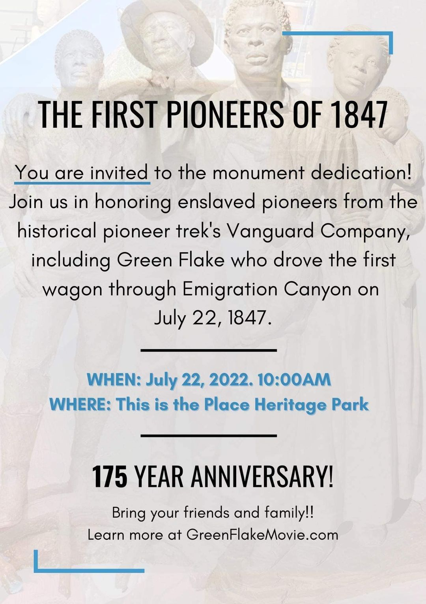

What is the Genesis Group?
Multistake activities groups are formed to give members confidence in their Church membership and a wider
circle of friendships. With this in mind, the Genesis Group encourages and supports Black Latter-day Saints,
their families, and friends in their discipleship of the Savior and membership in His restored Church. This
is accomplished through monthly devotionals, special needs-based activities, and other opportunities for
gospel friendship and fellowship. All Genesis meetings and activities are intended to help members more
fully participate in their home wards and stakes.
The Genesis Group devotional is held every first Sunday from 6:00 - 7:30 p.m. at 275 East 10600
South in the Sandy Utah Crescent South Stake Center. Although the meeting does not begin until 6:00,
members arrive early to hear the Unity Gospel Choir International perform at 5:30 p.m.
As background, the Genesis Group was founded in 1971 under the direction of members of the Quorum of the
Twelve Apostles. The group meets under the direction of Elder Clark Gilbert as the assigned liaison from the
Seventy with host stake president, President John R. Taylor of the Draper Utah Mountain Point Stake.
Quote of the Month
I must confess, my friends, that the road ahead will not always be smooth. There will still be rocky places of
frustration and meandering points of bewilderment. There will be inevitable setbacks here and there. And there
will be those moments when the buoyancy of hope will be transformed into the fatigue of despair. Our dreams will
sometimes be shattered and our ethereal hopes blasted. But difficult and painful as it is, we must walk on in
the days ahead with an audacious faith in the future.
Dr. Martin Luther King Jr., 1967. "Where Do We Go From Here?" Annual report delivered at the 11th Convention of
the Southern Christian Leadership Conference, August 16, Atlanta, GA.
http://www-personal.umich.edu/~gmarkus/MLK_WhereDoWeGo.pdf
Genesis Monthly Devotional Sunday July 3, 2022
Brothers and Sisters, we're excited to hear from two wonderful speakers this month, longtime Genesis members
and health professionals Sister Muruiel Lee and Sister Kimberly Teitter. Come enjoy the messages of the two
wonderful members. The Choir Prelude begins at 5:30pm. The devotional will start at 6pm at 275 E 10600 S in
Sandy Utah. We look forward to seeing you all there.
The Genesis Group was established in October 1971 by the First Presidency of The Church of Jesus Christ of
Latter-day Saints as a dependent branch to serve the needs of African-American Latter-day Saints. Following the
priesthood revelation, or Official Declaration #2, in June 1978, The Genesis Group continues to host meetings on
the first Sunday of every month, and other activities, to support and edify all Latter-day Saints, their
families and friends, and individuals interested in the LDS Church. The Genesis Group also provides assistance
to mission presidents, stake presidents, and bishops. Elder David Warner, a member of the Fifth Quorum of the
Seventy, currently oversees The Genesis Group.
A member of the original Genesis Group Presidency and former President of Genesis, Darius Gray, writes: "Genesis
was, and is, a unique unit of the Church. We are like no other Church organization but our existence was brought
into being by the direct actions of the First Presidency and The Quorum of the Twelve. We are not an auxiliary
like the Relief Society but we are more than a 'fireside' while less than a ward. What fireside has a presidency
set apart to a specific purpose? What fireside has its own auxiliaries? . . . Genesis is by design not like any
other unit of the Church but there is beauty in that special calling. There is also responsibility. We exist and
serve at the pleasure of the leadership of the Lord's Church. Our purpose is the Lord's purpose - we help to
bring souls to the Restored Gospel."
The Genesis Group meeting is held every first Sunday from 6:00 to 7:30 p.m. at 275 East 10600 South in Sandy,
Utah, USA. Although the meeting does not begin until 6:00pm, members arrive early to hear the Debra Bonner Unity
Gospel Choir perform at 5:30 p.m.
Regular activities include the annual summer picnic, usually held the first Saturday in June, with 300+ in
attendance from all over the United States and Canada. On the first Saturday in December is the annual Christmas
potluck dinner. March brings the Brothers Breakfast and September the Sisters Breakfast. Other annual activities
are held for Primary and the youth.
All are invited to attend, so come join us.
July 3, 2022 Genesis Monthly Devotional
Brothers and Sisters, We're excited to hear from two wonderful speakers this month, longtime Genesis members and
healthcare professionals, Sister Muriel Lee and Sister Kimberly Teitter. Come enjoy the messages of the two
wonderful members. The Choir Prelude begins at 5:30pm. The devotional will start at 6pm at 275 E 10600 S in
Sandy Utah. We look forward to seeing you all there.

Come out and help celebrate the first Pioneers to enter into the Salt Lake Valley.